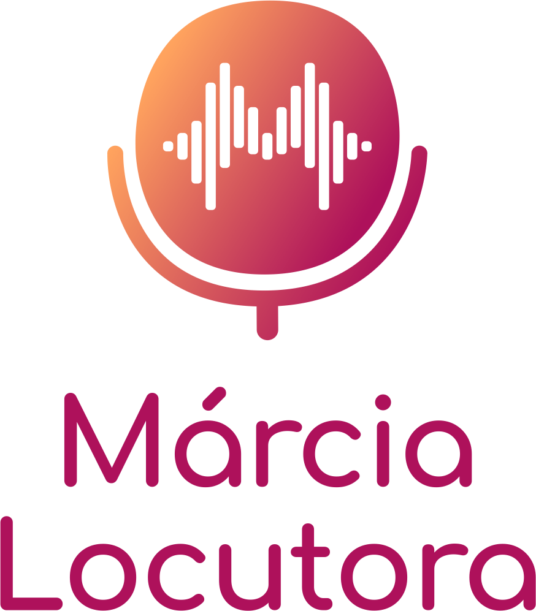
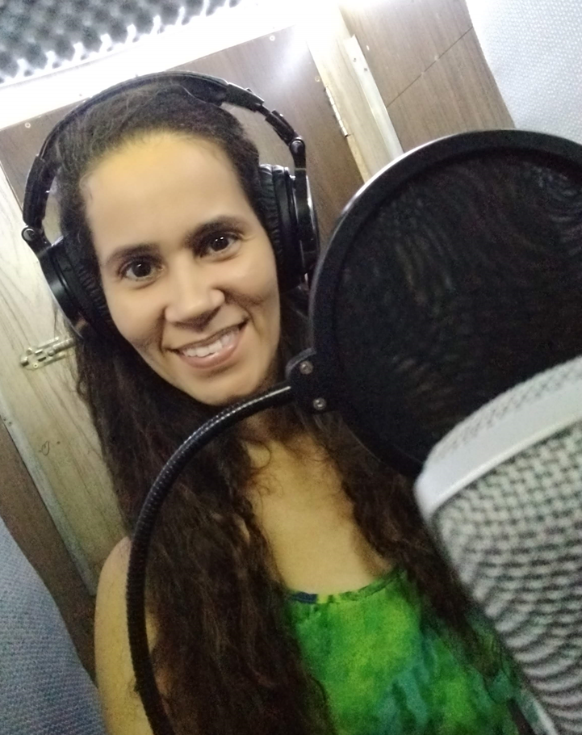

Voz versátil,
projetos com essência
Locutora profissional em João Pessoa para publicidade, vídeo e narração — clareza, emoção e presença em cada gravação.
Voz de Márcia Locutora
Locução profissional para publicidade, vídeo e comunicação. Assista a trabalhos reais:
Estilos de locução
Versatilidade para se adaptar ao tom que seu projeto precisa, do institucional ao comercial.

- Márcia Domingos — Eudora Dermo Hair Spot 0:15
- Márcia Domingos — Primor Histórias Primorosas 0:11
- Márcia Domingos — TanaCaixa Nordeste 0:25
- Márcia Domingos — Projeto Elas Diário NE 0:10
- Márcia Domingos — CasaBoa Viagem 0:18
- Márcia Domingos — Desafio Voz à Obra #157 0:12
<audio> nativo com transcrição.
6 faixas
Banco de talentos
Quero contratarAlém da Voz de Márcia Locutora, oferecemos vozes em outros estilos em nosso banco de talentos. Vozes infantis, adolescentes, jovens, cantores para jingle, dentre outras. Conheça algumas:
Márcia Domingos
Conheça a profissional por trás de uma voz que comunica com autenticidade e profissionalismo.
Especializada em dar voz a projetos com agilidade e qualidade. Com experiência em Comunicação Social Rádio & TV e pós-graduação em Redação Jornalística, oferece narração com credibilidade, boa dicção e ritmo adequado.
Sou nordestina e, se necessário, utilizo meu sotaque paraibano, reforçando a representatividade. Ofereço serviços de voz padrão institucional, documentário, e-learning, voz infantil e caricata, além de locução publicitária com voz natural e narrativas de audiolivros.
- +5 anos de experiência em locução
- +20 anos com textos e comunicação
- +25 marcas e projetos atendidos
- +3.400 h de gravação e produção

Pronto para dar voz ao seu projeto?
Envie o briefing, o roteiro ou apenas a ideia. Você recebe uma proposta com tonalidade, prazo e formato de entrega.
Solicitar orçamento